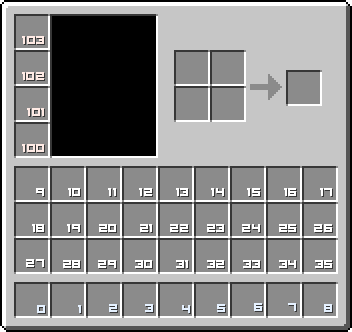

Map XML Reference
Map XML Reference
Game Modes: Capture the Wool | Destroy the Monument | Blitz | Destroy the Core | Team Death-match | Score Boxes
Game Settings: Rules | Kits | Teams | Items | Potion Effects | Repair & Remove | Projectiles | TNT | Mobs | Other Settings
Regions: Filters | Regions | Spawns | Playable Region | Lanes | Portals
Reference: Inventory | Colours | Enchantments | Potions
Map Info
<?xml version="1.0"?>
<map proto="1.3.0"> <!-- Failsafe to prevent old versions of PGM from loading newer maps -->
<name>Map Name</name> <!-- The maps name, shouldn't be too long -->
<version>1.0</version> <!-- The map version -->
<objective>Short description about the maps objective.</objective>
<authors>
<author>aPerson</author> <!-- The creator of the map, minecraft username preferred -->
<author contribution="Clarification of element usage, etc.">Plastix</contributor>
</authors>
<contributors>
<contributor contribution="A contribution">aHelper</contributor>
</contributors>
<!-- Other map stuff -->
</map>
Misc notes
Guide is still a WIP, some sections need rewrites to make them clearer.
- What is XML? Introduction to XML

- PGM stands for PVP Game Manager.
- A maps XML file is used to specify how the PGM plugin will setup a match, it's useless without the PGM plugin to run it.
- See maps.oc.tc for XML file examples.
- The XML files should be run through a XML validator before being submitted.
- XML files should also be correctly indented to improve readability.
- Tags that accept a time are in seconds unless suffixed with m, h, etc.
Game Modes
All game modes are compatible with each other except for Blitz, it will not work with any other game mode. For example you can mix <wools> and <destroyables> however all objectives have to be completed for the match to end. It is common for maps to only have 2 teams, although more are possible it usually just causes confusion.
- Use common sense when mixing game modes.
Capture the Wool
Players have to retrieve wool blocks from the enemy teams side of the map and then put them into their victory monument(s). The area a wool has to be placed in is protected by default to prevent it from being blocked with another block.
<wools>
<wool team="blue" color="lime">
<block>0.5,11,-92.5</block>
<!-- Blue team has to place a lime wool block at 0.5,11,-92.5 to win -->
</wool>
<wool team="green" color="light blue">
<block>0.5,11,93.5</block>
</wool>
</wools>
You can group multiple victory monuments from the same team inside a single <wools team="team name"> element; and then define that teams individual wool colours inside of a <wool> element.
<wools team="red">
<wool color="cyan">
<block>-60,26,-118</block>
</wool>
<wool color="lime">
<block>-60,26,-121</block>
</wool>
</wools>
<wools team="blue">
<wool color="magenta">
<block>-117,26,-115</block>
</wool>
<wool color="lime">
<block>-117,26,-121</block>
</wool>
</wools>
See bukkit docs - Dye Colour for valid wool color names.
Destroy the Monument
Players have to locate and destroy certain objects from the enemy team, such as an obsidian pillar, etc. Teams win after a specified percentage of the enemy teams destroyables are destroyed. Teams can have multiple destroyables and they can be made out of multiple materials. Multiple materials should be separated with a semicolon ;.
<destroyables name="Monument" materials="obsidian" completion="100%">
<destroyable owner="blue">
<cuboid min="46,16,26" max="45,14,25"/>
</destroyable>
<destroyable owner="red">
<cuboid min="-44,16,-24" max="-45,14,-25"/>
</destroyable>
</destroyables>
Completion specifies how much of the material inside of the region must be removed for it to count as destroyed. This means that if the destroyable is 50% obsidian, and 50% wood and completion is set to 100%; then all the obsidian must be removed. The plugin won't care 1¢ about the wood.
Blitz
The game will run for a specified amount of time, players will have to find and kill enemy players. Each player has a limited amount of lives, and after they are used up the player is moved to the observer team. The match ends after the specified amount of time, or when one team is eliminated. If the match timer ends before a team is eliminated the team with the most players remaining wins.
<blitz>
<!-- Time till the match ends in minutes -->
<time>10m</time>
<!-- Amount of lives each player has-->
<lives>1</lives>
</blitz>
Destroy the Core
Players have to locate and break the enemy teams core, usually an obsidian sphere filled with lava. The lava has to leak out a certain amount for the game to end. Teams can have more than one core. Cores automatically change from their base material to gold after 15 minutes and glass after 20.
<cores material="obsidian" leak="8">
<core team="blue"><region min="10,15,12" max="12,13,16"/></core>
</cores>
Leak specifies how far the lava / water in the core has to leak out for the game to end. Whatever is inside of the core cannot be available anywhere on the map, otherwise a core leak could be faked.
Team Death-match
Game will run for a specified amount of time and then the team with the highest score wins. Teams increase their score by killing players from the other team or capturing points from a score box.
<score>
<!-- Time till the match ends in seconds -->
<time>600</time>
</score>
Kill scoring works as follows. Killing a player adds 1 point to the killers team score, kills from environmental damage such as lava or the void subtract 1 point from the dying players team score.
Score Boxes
A score box will give the specified team X points when a player from that team enters the region. Portals should be setup to remove the player from the immediate vicinity of the score box to prevent multiple scores.
<score>
<box> value="2" team="red" filter="only-red">
<cylinder base="21,8,63" radius="1" height="2"/>
</box>
</score>
This score box uses a custom filter to only allow red team players access.
Game Settings
Rules
You can use the <rules> element to add custom rules to your map. Regions should be used to enforce access / block rules.
<rules>
<rule>A custom map rule</rule>
</rules>
Kits ~
Kits are used when spawning and in healing / special item zones. See items for information on how to give items or items with special properties, and potion effects for information on how to give potion effects. Kits can inherit items from other kits by using the parents="" attribute. Kits are referenced by their name="" from spawns and regions.
<kits>
<kit name="spawn">
<item slot="0">iron sword</item>
<item slot="8" amount="32">bread</item>
<potion duration="5" amplifier="1">heal</potion>
</kit>
<kit name="red" parents="spawn">
<helmet color="cd0000">leather helmet</helmet>
</kit>
<kit name="blue" parents="spawn">
<helmet color="0066cc">leather helmet</helmet>
</kit>
</kits>
In the example above players from blue team will get a blue helmet, players from red team will get a red helmet; both teams will get the items from the spawn kit. The spawn kit contains a 5 second healing potion effect to help prevent spawn killing.
Teams
Setup the teams, their names and represented colours. See bukkit colours for valid team colours. The player limit for each team is defined inside of the max="" attribute. Teams can have a custom overhead colour with the overhead-color="" attribute.
<teams>
<team color="dark red" max="50">Red Team</team>
<team color="blue" max="50">Blue Team</team>
</teams>
Don't forget that the total maximum number of players in the above example is 100. Maps currently have a player limit of 150, so 100 players in total would allow 50 observers.
Items
Item tags have many different attributes, and some may only apply to certain items. Such as the color="" attribute, it currently only applies to leather armour.
List of item names: bukkit docs - Material
<item>Item name or id</item>
<!-- Item attributes -->
slot="0"
name="Name String"
enchantment="enchantment:lvl"
lore="Lore String"
color="RRGGBB"
damage="0"
The slot="" attribute specifies where the item will be placed in the inventory. Inventory slot reference.
Enchantments use the bukkit enchantment name, the level of the enchantment is specified after a colon :. Multiple enchantments are separated by a semicolon ;.
<item enchantment="sharpness:2">iron sword</item> <!-- A sharpness II iron sword -->
<item enchantment="knockback:4">280</item> <!-- A knockback IV stick -->
Items can be give custom names and lore with the name="" and lore="" attributes. Colours in item names or lore are specified with the grave symbol ` and then the minecraft color code.
<item lore="Majick Dust">331</item> <!-- Redstone dust with a normal name. -->
<item name="`6Golden Sword">gold sword</item> <!-- Gold sword with a gold/yellow name. -->
<item lore="`4The One and Only">stick</item> <!-- A stick with the lore coloured red. -->
Armour slots have predefined tags to make it easier to give them to a player. They accept most of the properties of normal items.
<helmet>iron helmet</helmet>
<chestplate>diamond chestplate</chestplate>
<leggings>gold leggings</leggings>
<boots>leather boots</boots>
Enchanting, naming or giving armour lore works the same way as with items.
<boots enchantment="protection fall:1" lore="The Winged Boots of Hermes">iron boots</boots>
Items like leather armour are coloured with the color="" attribute.
The colour is represented in hexadecimal.
<helmet color="cd0000">leather helmet</helmet>
Potion Effects
<potion duration="10" amplifier="4">damage resistance</potion>
<potion duration="900" amplifier="1">jump</potion>
Potions effects will be applied directly to the player. Duration specifies how long the potion will last in seconds and amplifier what level / how strong the potion is. The potion type is specified using the potion name.
To give a potion as an item you have to use:
<item slot="3" damage="8229">potion</item>
The damage specifies the potion type. Minecraft wiki - Potions .
Repair & Remove
Defines tools that will be automatically repaired when dropped and picked up again. This will also merge items that are picked up, i.e., picking up an iron sword would result in it merging with your sword and repairing it. Repaired items will keep their enchantment, unlike vanilla minecraft where they will not.
<toolrepair>
<tool>iron sword</tool>
<tool>bow</tool>
</toolrepair>
Defines items that will be deleted when dropped on the map. Also works when items are destroyed, such as seeds from tall grass, etc.
<itemremove>
<item>arrow</item>
<item>cooked fish</item>
<item>diamond helmet</item>
<item>iron chestplate</item>
</itemremove>
Projectiles
<modifybowprojectile>
<projectile>EnderPearl</projectile>
<velocityMod>2.5</velocityMod>
</modifybowprojectile>
Projectiles can be modified to shoot a different entity at a custom speed. The PGM plugin will calculate the damage the projectile does using the same formula as minecraft does for arrows. This means that a flying fish with a velocity of 40 will almost certainly kill you.
All the following projectiles can be used.
Arrow
Egg
EnderPearl
Fireball
Fish
LargeFireball
SmallFireball
Snowball
ThrownExpBottle
ThrownPotion
WitherSkull
Copied from bukkit docs - Projectile
TNT
<tnt>
<!-- TNT instantly ignites -->
<instantignite>on</instantignite>
<!-- TNT doesn't destroy the terrain -->
<blockdamage>off</blockdamage>
<!-- Modify the amount of items dropped by the explosion as a percentage -->
<yield>0</yield>
</tnt>
Mob Spawning
By default PGM disables all mob spawning. Enable specific mob spawning with the <mobs> element, uses special filters to deny / allow specific mobs and spawn methods. Valid mob names can be found on the bukkit docs - Creature Type.
<mobs><mobs>
<!-- Filter elements -->
<spawn>spawn type</spawn> <-- spawner & spawner egg -->
<mob>mob name</mob>
<entity>entity name</entity>
Examples:
<!-- Allow mobs to spawn from monster spawners. -->
<mobs>
<filter>
<spawn>spawner</spawn>
</filter>
</mobs>
<!-- Example from Cake Wars (https://maps.oc.tc/Cake%20Wars/map.xml). -->
<mobs>
<filter parents="deny-all">
<allow>
<!-- Allow cave spiders to be spawned with spawn eggs -->
<mob>cave spider</mob>
<spawn>spawner egg</spawn>
</allow>
</filter>
</mobs>
Other Settings
Lock the time to what the map was saved with. Change the maps time to midnight and then save it. The time will then remain locked to midnight the whole game through.
<timelock>on</timelock> <!-- Defaults to off -->
Set the max build height, this can also be accomplished with the playable region or a regular region with a filter.
<maxbuildheight>38</maxbuildheight>
Change friendly fire, this will allow teammates to shoot each-other, instead of the arrow being absorbed.
<friendlyfire>on</friendlyfire> <!-- Defaults to off -->
The maps difficulty can be specified from 0 (peaceful) to 3 (hard). If not specified it defaults to the default worlds difficulty. This mainly influences a players food bar.
<difficulty>1</difficulty>
Filters ~
<filters>
<filter name="no-world" parents="deny-world"></filter>
</filters>
Filters are used to filter player, block and world events in regions. The filter name is used to reference it inside of regions. On their own filters do nothing, you need to apply them to regions for them to do something. Filters can inherit filters using the parents="" attribute.
Predefined Filter Parents
allow-all / deny-all
<!-- allows or denies every filter -->
allow-players / deny-players
<!-- allow or deny player access -->
allow-blocks / deny-blocks
<!-- allow or deny placement and breaking of blocks -->
allow-place / deny-place
<!-- allow or deny placement of blocks -->
allow-break / deny-break
<!-- allow or deny breaking of blocks -->
allow-world / deny-world
<!-- allow or deny block transformations such as fire spread, water flowing, etc -->
allow-spawns / deny-spawns
<!-- allows or denies player spawns -->
allow-entities / deny-entities
<!-- determines if entities will be allowed -->
allow-mobs / deny-mobs
<!-- allows or denies all mobs spawns, regardless of type -->
Filter Exceptions
Filters can have exceptions such as blocking all player access and then allowing a certain team access. Exceptions are put inside of <allow> or <deny> elements.
<!-- Exception elements -->
<team>team name</team>
<block>block name</block>
Example:
<filter name="only-red" parents="deny-players">
<allow><team>red</team></allow>
</filter>
<filter name="gold-blocks" parents="deny-block">
<allow><block>gold block</block></allow>
</filter>
<filter name="no-tnt" parents="allow-all">
<deny><block>TNT</block></deny>
</filter>
Regions ~
The area a region applies too is specified with one or more of the following elements. Use oo to specify infinity in coordinates.
<!-- Note that Y is the up/down axis in minecraft -->
<rectangle name="something" min="X1,Z1" max="X2,Z2"/>
<!-- A Rectangle from X1,Z1 to X2,Z2 -->
<cuboid name="something" min="X1,Y1,Z1" max="X2,Y2,Z2"/>
<!-- A rectangular solid from X1,Y1,Z1 to X2,Y2,Z2 -->
<circle name="something" center="X1,Z1," radius="R"/>
<!-- A circle located at X1,Z1 with a radius of R -->
Goes from 0 to map height, ie doesn't check player Z
<cylinder name"something" base="X1,Y1,Z1" radius="R" height="H"/>
<!-- A cylinder located at X1,Z1,Y1 with a radius of R and a height of H -->
<sphere name"something" origin="X1,Y1,Z1" radius="R"/>
<!-- A sphere located at X1,Y1,Z1 with a radius of R -->
<block>X,Y,Z</block>
<!-- A single block located at | X,Y,Z -->
<!-- Region area and combination attributes -->
name="name"
Regions can be grouped inside of <apply> elements or region combination elements.
Filters and kits are applied to regions as attributes of the <apply> element.
<apply><region1>..</apply>
<!-- Attributes of the <apply> element -->
enter="filter name"
<!-- Filter player enter events-->
exit="filter name"
<!-- Filter player exit events-->
block="filter name"
<!-- Filter block place and break events-->
block-place="filter name"
<!-- Filter block place events-->
block-break="filter name"
<!-- Filter block break events-->
kit="kit name"
<!-- Give a kit to players entering the region -->
<apply enter="only-blue" message="You may not enter the enemy team's base!">
<region name="region name"/>
</apply>
Example kit region from Anathema.
<apply kit="knight">
<region name="r-knight"/>
<region name="b-knight"/>
</apply>
Similar to kits regions are referenced by their name="".
To use regions in spawns, portals etc reference them by their name.
<!-- Referencing a named region -->
<region name="region name"/>
TIP: Use the worldedit wand to help in defining regions, select an area and do /size. It will display two 3D coordinates. To use these coordinates you will have to add 1 to the greater axis of the coordinates.
This is because PGM checks from the centre of blocks and WE checks from the corners.
For example : min="49,13,-4" max="37,10,4" would become min="50,14,-4" max="37,10,-5".
Example regions
<regions>
<!-- Blue Team Base -->
<apply enter="only-blue" message="You may not enter the enemy team's base!">
<cuboid min="49,13,4" max="37,10,-4"/>
</apply>
<apply block="deny-all" message="You may not modify the base!">
<cuboid min="50,14,-5" max="36,7,5"/>
</apply>
<!-- Blue Team Tree -->
<apply block="deny-all" message="This tree is protected, go figure.">
<cylinder base="83.5,0,-47.5" radius="4" height="40"/>
</apply>
</regions>
Example regions from Harb using region combinations:
<regions>
<rectangle name="main-area" min="-50,-32" max="51,33"/>
<union name="bases">
<rectangle name="blue-base" min="-20,-62" max="21,-32"/>
<rectangle name="red-base" min="-20,33" max="21,63"/>
</union>
<complement name="portals-area">
<rectangle min="-56,-2" max="57,3"/>
<region name="main-area"/>
</complement>
<apply block="deny-all">
<!-- Protect portal areas -->
<region name="portals-area"/>
</apply>
<apply block="no-tnt" message="You may not place TNT in the bases.">
<region name="bases"/>
</apply>
</regions>
Region Combinations
Regions can be inverted, combined, subtracted, or intersected by putting them inside of the following elements.
<negative><region></negative>
<!-- Inverse of a region -->
<union><region1><region2></union>
<!-- Combination of multiple regions -->
<complement><region1><region2>..</ complement>
<!-- Subtracts successive regions from the first defined region -->
<intersect><region1><region2>...</ intersect>
<!-- Returns the area that multiple regions intersect with -->
Example:
<regions>
<!-- Blue Team Base -->
<apply enter="only-blue" message="You may not enter the enemy team's base!">
<union>
<cuboid min="-20,8,-75" max="11,41,-79"/>
<cuboid min="8,8,-80" max="13,41,-75"/>
</union>
</apply>
</regions>
Spawns
Spawns are defined as follows.
<spawns>
<spawn team="red" kit="red" yaw="90">
<cuboid min="-2,13,71" max="-9,13,78"/>
</spawn>
<spawn team="blue" kit="blue" yaw="-90">
<cuboid min="2,13,-71" max="9,13,-78"/>
</spawn>
<default yaw="0">
<cuboid min="-1,16,-1" max="2,20,2"/>
</default>
</spawns>
The default element specifies where observers and players without a team spawn.
yaw="" specifies what direction the player is looking horizontally from -180° to 180°. South 0°, East -90°, North 180° and West 90°.
Multiple spawns from the same team can be grouped inside of a single <spawns team="team name"> element. Spawn locations are picked randomly, and the plugin does not validate the end location. Spawn regions should be checked to make sure that they don't intersect with any solid objects. Spawn elements accept more that one region or region area, and they don't have to be inside a union element.
<spawns team="blue">
<!-- Blue Team Spawn A -->
<spawn yaw="270">
<cuboid min="-58,4,-56" max="-56,4,-54"/>
</spawn>
<spawn yaw="0">
<cuboid min="-62,4,-50" max="-64,4,-48"/>
</spawn>
<!-- Blue Team Spawn B -->
<spawn yaw="90">
<cuboid min="59,4,-54" max="57,4,-56"/>
</spawn>
<spawn yaw="0">
<cuboid min="65,4,-48" max="63,4,-50"/>
</spawn>
</spawns>
<spawns team="red">
<!-- Red Team Spawn A -->
<spawn yaw="270">
<cuboid min="-56,4,55" max="-58,4,57"/>
</spawn>
<spawn yaw="180">
<cuboid min="-64,4,49" max="-62,4,51"/>
</spawn>
<!-- Red Team Spawn B -->
<spawn yaw="180">
<cuboid min="63,4,49" max="65,4,51"/>
</spawn>
<spawn yaw="90">
<cuboid min="57,4,57" max="59,4,55"/>
</spawn>
</spawns>
Playable Region
The playable region is defined as follows. Playable regions prevent any playing player from exiting or doing anything outside off the region. It also blocks damage from TNT, mobs, etc.
<playable>
<region name="main-area"/>
</playable>
Of course you will first need to create a region with name="main-area" or directly use a region area.
<playable>
<cuboid min="-32,0,33" max="33,20,-32">
</playable>
Lanes ~
Lanes are used in CTW style maps with two parallel lanes for the teams. They prevent players from leaving their teams lane and entering the enemies.
Example from Parallax
<lanes>
<lane team="blue">
<region name="blue-lane-total"/>
<region name="blue-spawn-rooms"/>
</lane>
<lane team="red">
<region name="red-lane-total"/>
<region name="red-spawn-rooms"/>
</lane>
</lanes>
Portals
<portals>
<!-- Offset location, adds X,Y and Z to the players current location -->
<portal x="X" y="Y" z="Z" pitch="" yaw="" filter="filter name">
<!-- Portal region, this is the region the player has to enter to be teleported -->
<cuboid min="X1,Y1,Z1" max="X2,Y2,Z2">
</portal>
</portals>
Position attributes of the <portal> element are relative to the players location and where they are looking. Prefix values with an at symbol @ to specify absolute values. Portals can be restricted to certian teams by defining their filter="" attribute.
yaw="" specifies what direction the player is looking horizontally from -180° to 180°. South 0°, East -90°, North 180° and West 90°.
pitch="" specifies what direction the player is looking vertically from -90° to 90°. -90° is straight up 90° is straight down.
Go to Top
Reference
Inventory

List of item names: bukkit docs - Material
Colours
0 BLACK
1 DARK_BLUE
2 DARK_GREEN
3 DARK_AQUA
4 DARK_RED
5 DARK_PURPLE
6 GOLD
7 GRAY
8 DARK_GRAY
9 BLUE
a GREEN
b AQUA
c RED
d LIGHT_PURPLE
e YELLOW
f WHITE
Formatting Codes
k MAGIC
l BOLD
m STRIKETHROUGH
n UNDERLINE
o ITALIC
Copied from: bukkit docs - Chat Color
See: bukkit docs - Dye Colour for valid wool and dye color names.
Enchantments
<!-- PGM allows enchantments to be applied to any item. -->
<!-- Armour enchantments -->
PROTECTION_ENVIRONMENTAL - Provides protection against environmental damage.
PROTECTION_FIRE - Provides protection against fire damage.
PROTECTION_FALL - Provides protection against" fall damage.
PROTECTION_EXPLOSIONS - Provides protection against explosive damage.
PROTECTION_PROJECTILE - Provides protection against projectile damage.
OXYGEN - Decreases the rate of air loss whilst underwater.
WATER_WORKER - Increases the speed at which a player may mine underwater.
THORNS - Damages the attacker.
<!-- Tool enchantments -->
DAMAGE_ALL - Increases damage against all targets.
DAMAGE_UNDEAD - Increases damage against undead targets.
DAMAGE_ARTHROPODS - Increases damage against arthropod targets.
KNOCKBACK - All damage to other targets will knock them back when hit.
FIRE_ASPECT - When attacking a target, has a chance to set them on fire.
LOOT_BONUS_MOBS - Provides a chance of gaining extra loot when killing monsters.
DIG_SPEED - Increases the rate at which you mine/dig.
SILK_TOUCH - Allows blocks to drop themselves instead of fragments.
(for example, stone instead of cobblestone)
DURABILITY - Decreases the rate at which a tool looses durability.
LOOT_BONUS_BLOCKS - Provides a chance of gaining extra loot when destroying blocks.
<!-- Bow enchantments -->
ARROW_DAMAGE - Provides extra damage when shooting arrows from bows.
ARROW_KNOCKBACK - Provides a knockback when an entity is hit by an arrow from a bow.
ARROW_FIRE - Sets entities on fire when hit by arrows shot from a bow.
ARROW_INFINITE - Provides infinite arrows when shooting a bow.
Copied from: bukkit docs - Enchantments
Potions
SPEED - Increases movement speed.
SLOW - Decreases movement speed.
FAST_DIGGING - Increases dig speed.
SLOW_DIGGING - Decreases dig speed.
INCREASE_DAMAGE - Increases damage dealt.
HEAL - Heals an entity.
HARM - Hurts an entity.
JUMP - Increases jump height.
CONFUSION - Warps vision on the client.
REGENERATION - Regenerates health.
DAMAGE_RESISTANCE - Decreases damage dealt to an entity.
FIRE_RESISTANCE - Stops fire damage.
WATER_BREATHING - Allows breathing underwater.
INVISIBILITY - Grants invisibility.
BLINDNESS - Blinds an entity.
NIGHT_VISION - Allows an entity to see in the dark.
HUNGER - Increases hunger.
WEAKNESS - Decreases damage dealt by an entity.
POISON - Deals damage to an entity over time.
WITHER - Deals damage to an entity over time and gives the health to the shooter.
Copied from: bukkit docs - Potion Effect Types
See: Minecraft wiki - Potions for potion damage values.
Go to Top
Last edited: January 7, 2013